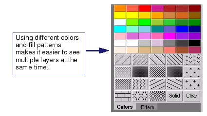

To make layers
more distinguishable from each other, consider changing the fill
patterns to stripes or cross-hatches. Any sparse fill pattern could
help the visibility of multiple layers in your layouts. Contrasting
light colors with a dark background also helps in detecting small
features embedded in your layouts.
Procedure
- Select the layer in the Layers
palette.
- In the Colors tab, click the desired fill
or color.
Figure 1. Change Fill Patterns
and Polygon Shades to Increase Visibility
Any fill or color changes are
automatically applied to the layer in the layout and Layers palette.
- To search for a specific layer,
enter the layer number in the Layers Browser search box.
The layer is automatically
selected in the list of layers.